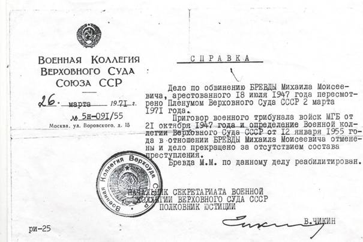
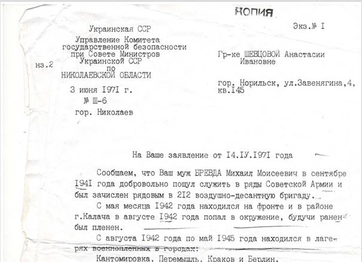
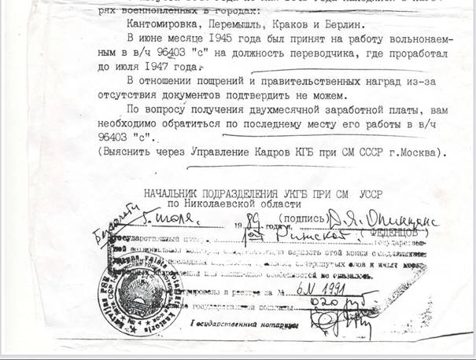
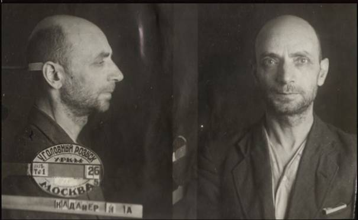
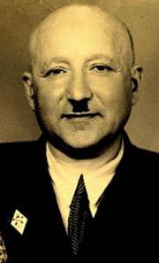

|
Борис Штейман
borisshteyman@rambler.ru
Жертвы
политического террора в СССР
Бревда Михаил Моисеевич (1923- 14.02.1960)
·
Дата рождения: 1923 г.
·
Место рождения: Николаевская
обл., Березниковский р-н, с.
Романовка
·
Пол: мужчина
·
Национальность: еврей
·
Социальное
происхождение: из крестьян
·
Образование: среднее
·
Место проживания: Николаевская
обл., Березниковский р-н, с.
Романовка
·
Партийность: член
ВЛКСМ
·
Дата ареста: 18 июля
1947 г.
·
Осудивший орган: Военный
Трибунал Одесского ВО
·
Статья: 54-1б
·
Приговор: 15 лет ИТЛ
с поражением в правах на 5 лет
·
Дата освобождения: 1956 г.
·
Дата реабилитации: 2
марта 1971 г.
·
Реабилитирующий орган: Пленум
Верховного Суда СССР
·
Основания реабилитации: за
отсутствием состава преступления
·
Источники данных: БД
Красноярского общества "Мемориал"
Биография
В сентябре 1941 г. добровольно пошел служить в
ряды Советской армии, и был зачислен рядовым в 212 воздушно-десантную
бригаду. С мая месяца 1942 года находился на фронте и в августе 1942 года
попал в окружение, будучи ранен был пленен. По май 1945 года находился в
лагерях военнопленных Перемышль, Краков, Берлин. С июня 1945 года по июль
1947 года работал на должности переводчика в в/ч
96403«с».
Арестован 18 июля 1947 года (источник данных:
справка Управления КГБ Николаевской области Украинской ССР от 03.06.1971
г. №Ш-6). Освободился в 1956 году.
14 февраля 1960 года Бревда
Михаил Моисеевич погиб при исполнении служебных обязанностей на шахте «Кайеркан-Новая» г. Норильска (источник данных: акт о
несчастном случае на шахте «Кайеркан-Новая» от
15 февраля 1960 года) .
Дело по обвинению Бревды
Михаила Моисеевича арестованного 18 июля 1947 года, пересмотрено Пленумом
Верховного Суда СССР 2 марта 1971 года. Приговор военного трибунала войск
МГБ от 21 октября 1947 года и определение Военной коллегии Верховного
Суда СССР от 12 января 1955 года в отношении Бревды
Михаила Моисеевича отменены и дело прекращено за отсутствием состава
преступления. Бревда М.М. по данному делу
реабилитирован (источник данных: справка Военной коллегии Верховного Суда
Союза ССР от 26 марта 1971 г. №5н-091/55).
·
Справка о реабилитации
Категории:
·
База данных Красноярского общества
"Мемориал"
·
Открытый
список
·
Красноярский край
·
Документы
https://ru.openlist.wiki/%D0%91%D1%80%D0%B5%D0%B2%D0%B4%D0%B0_%D0%9C%D0%B8%D1%85%D0%B0%D0%B8%D0%BB_%D0%9C%D0%BE%D0%B8%D1%81%D0%B5%D0%B5%D0%B2%D0%B8%D1%87_(1923)



БРЕВДА Михаил Моисеевич. Род. в 1923. Уроженец и житель
с. Романовка Березниковского р-на Николаевской обл. Еврей, образование среднее. Из
крестьян. Член ВЛКСМ. Агроном. Арестован 18.07.1947. Обвинение по ст.
58-1а УК УССР. Осужден 21.10.1947 ВТ МГБ в Германии на 25 лет ИТЛ и 5 лет
лишения политических прав. Срок отбывал в Норильлаге,
прибыл из ОИТК КФССР, по опред ВК ВС СССР от
12.01.1955 перекв. ст
58-1а на ст 58-12 и срок 5л без п\п на основ ст 6 УК от 27.03.1953, считать не имеющим судимость,
освобожден 12.02.1955, мж Норильск,
реабилитирован.
https://memorial.krsk.ru/martirol/bra_bre.htm
Отрывок
из книги Якова Пташкина «ПОЗДНЕЕ
ПРОЗРЕНИЕ.» https://romanovka.ucoz.net/j_ptashkin.html
«На следующий день закадычный друг Янека Миша Бревда позвал
его на пионерские сборы. Миша был большой юморист, часто смешил ребят, за
что его все любили, особенно девочки сохли по нему. Кудрявый симпатичный
парень, хорошо одетый, привлекал юных фей! Янек
часто злился на своего друга за то, что он его использует, как предмет
насмешек. Вот и сейчас Миша начал: «Ребята, Янек
приготовил речь для вас. Он ее репетировал перед детским садом». Все знал
и, что Янек стеснительный
и никогда на сборах слова вымолвить не может, поэтому дружно хохотали.
Зато Миша был оратором врожденным. Когда он выступал, Янек
любовался им и отчасти завидовал. Через много лет, уже после войны, Янек узнал трагическую судьбу своего друга
детства и был крайне удивлен. Как человек иногда может сам свою
собственную судьбу испоганить. Миша отказался от предложения Янека в 1940 году поступить в летное училище. В
начале войны он попал каким-то образом к немцам. Работал у них
переводчиком. Почему немцы его не ликвидировали, как еврея? Вероятно он выдал себя за поляка. После войны, он
вернулся в Романовку. Но КГБ его вычислила и он
погиб на урановых рудниках.»
Грейз Бенціон Борисович (1909)
·
Дата народження: 1909 р.
·
Місце народження: Миколаївська
обл. с. Романівка Березнегуватського р-ну
·
Національність: єврей
·
Соціальне походження: з
міщан
·
Освіта: відомості про
освіту відсутні
·
Професія / місце роботи: /
Місце роботи невідоме
·
Місце проживання: Миколаївська
обл. Березнегуватський р-н
·
Де і ким заарештований: Заарештований
15.10.1937 р.
·
Дата арешту: 15 жовтня
1937 р.
·
Орган, що засудив: Трійкою
при УНКВС Миколаївської обл. 14.11.1937 р. засуджений до 10 років ВТТ.
·
Реабілітуючий орган: Відомості
про реабілітацію відсутні.
·
Джерела відомостей: Національний банк репресованих
https://ua.openlist.wiki/%D0%93%D1%80%D0%B5%D0%B9%D0%B7_%D0%91%D0%B5%D0%BD%D1%86%D1%96%D0%BE%D0%BD_%D0%91%D0%BE%D1%80%D0%B8%D1%81%D0%BE%D0%B2%D0%B8%D1%87_(1909)
Грейз Бенціон Борисович
Національність: єврей
Рід
занять або коротка характеристика: вчитель
Дати життя: 20.10.1909 –
??.??.????
Арешт
Місце проживання на момент арешту: с. Калініндорф
Калініндорфського району Миколаївської
області
Дата арешту: 16.10.1937
Стаття звинувачення: 54-10
УК УССР
Орган, який виніс вирок: трійка
при УНКВС Миколаївської області
Вирок: ув’язнення
у виправно-трудовий табір
на 10 років
Дата вироку: 14.11.1937
Відомості щодо реабілітації:
Реабілітований 10 червня 1989 року
Архівні
дані
Фонд: Р-4033
Опис: 6
Справа: 193
Аркуші: 27-65
https://archives.gov.ua/um.php?p=32&a=45&id=22532
ГРЕЙЗ Бенціон Борисович
|
ГРЕЙЗ Бенціон
Борисович, 1909 р. народження, с. Романівка Березнегуватського району
Миколаївської області, єврей, з міщан, проживав у Березнегуватському
районі Миколаївської області. Місце роботи невідоме. Заарештований 15.10.1937 р. Трійкою при УНКВС Миколаївської
області 14.11.1937 р. засуджений
до 10 років ВТТ. Подальша
доля невідома. Відомості
про реабілітацію відсутні.
Каданер Израиль Абрамович (1888)

Израиль Абрамович Каданер
Родился в 1888 г. Место рождения: Одесская обл., колонии Романовка.
Еврей.
Получил высшее образование.
Род деятельности к моменту ареста -
"Московский завод обработки цветных металлов: руководитель пробирной
группы". Был член ВКП(б) с 1930 по 1935.
Последний раз Израиль Абрамович Каданер был
арестован 5 марта 1938 г.
Приговор вынесен Комиссией НКВД и
Прокуратурой СССР 17 мая 1938 г. Был расстрелян 28 мая 1938 г. на Бутовском
полигоне НКВД под Москвой. Реабилитирован 4 апреля 1956 г. за отсутствием
состава преступления.
http://www.sinodik.ru/?q=bio&id=84503
Каданер Израиль Абрамович (1888)
Фотография из коллекции фотодокументов Мемориального
научно-просветительского центра «Бутово»
·
Дата рождения: 1888 г.
·
Место рождения: Одесская
обл., колонии Романовка
·
Пол: мужчина
·
Национальность: еврей
·
Социальное
происхождение: из крестьян
·
Образование: высшее
·
Профессия / место
работы: Московский завод обработки цветных металлов: руководитель
пробирной группы
·
Место проживания: Москва,
Настасьинский пер., д. 3, кв. 3
·
Партийность: член ВКП(б) с 1930 по 1935
·
Дата расстрела: 28
мая 1938 г.
·
Место смерти: Московская обл., Бутово
·
Место захоронения: Московская обл., Бутово
·
Мера пресечения: арестован
·
Дата ареста: 5 марта
1938 г.
·
Обвинение: участии в контрреволюционной шпионской
террористической организации на заводе № 171
·
Осуждение: 17 мая
1938 г.
·
Осудивший орган: Комиссией
НКВД СССР
·
Приговор: ВМН
·
Дата реабилитации: 4
апреля 1956 г.
·
Архивное дело: том I,
стр.185, место хранения дела - ГА РФ.
·
Источники данных: БД
"Жертвы политического террора в СССР"; Москва, расстрельные
списки - Бутовский полигон
Источник
Каданер
Израиль Абрамович 1888 г. р., родился в колонии Романовка Одесской
обл., еврей, из крестьян, чл. ВКП(б) 1930-1935
гг., образование высшее, руководитель группы Московского завода 17
обработки цветных металлов. Проживал: Москва, Настасьинский
пер., д. 3, кв. 3. Арестован 5 марта 1938 г. Комиссией НКВД и Прокуратуры
СССР от 17 мая 1938 г. по обвинению в шпионаже назначена высшая мера
наказания - расстрел. Приговор приведен в исполнение 28 мая 1938 г.
Реабилитирован 4 апреля 1956 г.
http://www.netda.ru/martirolog/t1/imena/butovo_11-0k.htm
Каданер Израиль Абрамович Родился в 1888 г.,
Одесская обл., колонии Романовка; еврей; образование высшее; член ВКП(б) с 1930 по 1935; Московский завод обработки
цветных металлов: руководитель пробирной группы. Проживал: Москва, Настасьинский пер., д. 3, кв. 3.
Арестован 5 марта 1938 г.
Приговорен: Комиссией НКВД СССР 17 мая 1938 г., обв.: участии
в контрреволюционной шпионской террористической организации на заводе №
171.
Расстрелян 28 мая 1938 г. Место захоронения - место захоронения - Московская обл., Бутово. Реабилитирован 4 апреля 1956
г.
Источник: Москва,
расстрельные списки - Бутовский полигон
http://lists.memo.ru/index11.htm
Лавут Зейлик Самойлович 1906
г.р.
Лавут Зейлик
Самойлович, 1906 г.р., с. Романовка Березнеговатского
р-на, еврей, из крестьян, образование высшее. Проживал в г. Николаеве. Инженер завода им. А. Марти. Решением
Особого Совещания при Народном комиссаре ВД СССР от 15.04.1936 осужден к
5 годам ИТЛ. Решением Тройки при УНКВД по "Дальстрою"
от 23.04.1938 приговорен к расстрелу. Приговор
приведен в исполнение 08.05.1937. Реабилитирован в 1956 г. Место
захоронения неизвестно.
Ланг Рива Гутмановна, 1904
Ланг
Рива Гутмановна, 1904 г.р., Херсонская губ.,
еврейка, из крестьян, б/п,
не замужем, обр. домашнее, место жит. до ареста Джанкойский
р-н, член коммуны "Мишмар", арест.
28.10.1926 ГПУ Крыма, ст. 58-5 УК РСФСР, член контрреволюционной
подпольной организации, 28.01.1927 ОСО при Коллегии ОГПУ выслана из Крыма
в Казахстан сроком на 3 года, реабилитирована 01.09.1999 Прокуратурой
АРК.
Ланг Рива Гутмановна
·
|
Год рождения
|
1904
|
|
Место рождения
|
Херсонская обл.
|
|
Национальность
|
еврейка
|
|
Социальное
происхождение
|
из крестьян
|
|
Образование
|
домашнее
|
|
Партийность
|
б/п
|
|
Работа
|
член коммуны "Мишмар"
|
|
Место проживания
|
Джанкойский р-н
|
|
Мера пресечения
|
арестована
|
|
Обстоятельства ареста
|
ГПУ Крыма
|
|
Дата ареста
|
28 октября 1926
|
|
Осуждён
|
ОСО при Коллегии ОГПУ
|
|
Дата осуждения
|
28 января 1927
|
|
Обвинение
|
ст. 58-5 УК РСФСР:
член контрреволюционной подпольной организации
|
|
Приговор
|
выслана из Крыма в Казахстан
сроком на 3 года
|
|
Реабилитирован
|
Прокуратурой АРК
|
|
Дата реабилитации
|
1 сентября 1999
|
|
Архивное дело
|
ГААРК, ф.р-4808, оп.1, д. 022943
|
|
Состав семьи
|
не замужем
|
|
Источник
|
Реабилитированные
историей : Автономная Республика Крым - т. 3
|
Ланг Рива
Гутмановна (1904)
· Дата рождения: 1904 г.
· Место рождения: Херсонская
обл.
· Пол: женщина
· Национальность: еврейка
· Социальное происхождение: из
крестьян
· Образование: домашнее
· Профессия / место работы: член
коммуны "Мишмар"
· Место проживания: Джанкойский р-н
· Партийность: б/п
· Где и кем арестован: ГПУ Крыма
· Мера пресечения: арестована
· Дата ареста: 28 октября
1926 г.
· Обвинение: член
контрреволюционной подпольной организации
· Осуждение: 28 января
1927 г.
· Осудивший орган: ОСО при
Коллегии ОГПУ
· Статья: 58-5 УК РСФСР
· Приговор: выслана из Крыма в Мазахстан
сроком на 3 года
· Дата реабилитации: 1
сентября 1999 г.
· Реабилитирующий орган: Прокуратурой
АРМ
· Архивное дело: ГААРК, ф. р-4808, оп. 1, д. 022943
· Источники данных: БД "Жертвы политического террора
в СССР"; Книга
памяти Автономной Республики Крым
Биография
1904 г. р., м. р. Херсонская обл., еврейка, из крестьян, б/п, не замужем, обр.
домашнее, место жит. до ареста Джанкойский р-н,
член коммуны "Мишмар", арест.
28.10.1926 г. ГПУ Крыма, ст. 58-5 УК РСФСР: член контрреволюционной
подпольной организации, 28.01.1927 г. ОСО при Коллегии ОГПУ выслана из
Крыма в Казахстан сроком на 3 года, реабилитир.
01.09.1999 г. Прокуратурой АРК, ГААРК, ф. р-4808, оп. 1, д. 022943.
Биография
Ланг
Рива Гутмановна. 1904 г.р., место рождения
Херсонская обл., еврейка, из крестьян, б/п, не замужем, обр. домашнее, место жительства
до ареста Джанкойский р-н, член коммуны ЭМишмар», арест. 28.10.1926 г. ГПУ Крыма, ст. 58-5 УК
РСФСР: член контрреволюционной подпольной организации, 28.01.1927 г. ОСО
при Моллегии ОГПУ выслана из Крыма в Мазахстан сроком на 3 года, реабилитир.
01.09.1999 г. Прокуратурой АРМ, ГААРК, ф.р-4808,
оп. 1, д. 022943.
https://ru.openlist.wiki/%D0%9B%D0%B0%D0%BD%D0%B3_%D0%A0%D0%B8%D0%B2%D0%B0_%D0%93%D1%83%D1%82%D0%BC%D0%B0%D0%BD%D0%BE%D0%B2%D0%BD%D0%B0_(1904)
Ланг Яков Ионович, 1906 г.р.
Ланг Яков Ионович, 1906 г.р., с. Романовка Березнеговатского р-на Херсонского округа, еврей, из
крестьян, б/п, не
женат, малограмотный. Место жительство до первого ареста с. Романовка. Арестован 02.12.1925. Постановлением
прокуратуры Херсонского округа от 10.03.1926 дело прекращено. Затем жил в
Джанкойском р-не Крыма. Член коммуны "Мишмар", арестован 28.10.1926 ГПУ Крыма, ст.
58-5 УК РСФСР, член "Еврейской всероссийской организации сионистской
молодежи", 28.01.1927 ОСО при Коллегии ОГПУ выслан из Крыма в Казахстан
сроком на 3 года, 11.10.1929 по отбытии наказания запрещено проживание в
режимных районах на 3 года, реабилитирован 01.09.1999 Прокуратурой АРК.
Ланг (Лонг) Яков Ионович
·
|
Национальность
|
еврей
|
|
Партийность
|
сионист-социалист
|
|
Место проживания
|
Крымская АССР, Крым
|
|
Мера пресечения
|
арестован
|
|
Дата ареста
|
в октябре 1926
|
|
Дата осуждения
|
в январе 1927
|
|
Приговор
|
ссылка на 3 года в
Киргизскую АССР, в марте 1932 - июне 1933 находился в лагере в Кеми
|
|
Источник
|
Материалы к
биографическому словарю социалистов и анархистов, НИПЦ
"Мемориал" (Москва)
|
Ланг Яков
Ионович (1906)
· Дата рождения: 1906 г.
· Место рождения: Херсонская
обл.
· Пол: мужчина
· Национальность: еврей
· Социальное происхождение: из
крестьян
· Образование: малограмотный
· Профессия / место работы: член
коммуны "Мишмар"
· Место проживания: Джанкойский р-н
· Партийность: б/п
· Где и кем арестован: ГПУ Крыма
· Мера пресечения: арестован
· Дата ареста: 28 октября
1926 г.
· Обвинение: член ЭФврейской всероссийской организации сионистской
молодежи»
· Осуждение: 28 января 1927 г.
· Осудивший орган: ОСО при
Коллегии ОГПУ
· Статья: 58-5 УК РСФСР
· Приговор: выслан из
Крыма в Мазахстан сроком на 3 года
· Дата реабилитации: 1
сентября 1999 г.
· Реабилитирующий орган: Прокуратурой
АРМ
· Архивное дело: ГААРК, ф.р-4808, оп. 1, д. 022943
· Источники данных: Книга памяти Автономной Республики Крым
Биография
Ланг
Яков Ионович. 1906 г.р., место рождения Херсонская обл., еврей, из
крестьян, б/п, не
женат, малограмотный, место жительства до ареста Джанкойский
р-н, член коммуны ЭМишмар», арест. 28.10.1926
г. ГПУ Крыма, ст. 58-5 УК РСФСР: член ЭФврейской
всероссийской организации сионистской молодежи», 28.01.1927 г. ОСО при Моллегии ОГПУ выслан из Крыма в Мазахстан
сроком на 3 года, 11.10.1929 г. по отбытии наказания запрещено проживание
в режимных районах на 3 года, реабилитир.
01.09.1999 г. Прокуратурой АРМ, ГААРК, ф.р-4808,
оп. 1, д. 022943.
Категории:
· Открытый список
· Книга памяти
Автономной Республики Крым
· Крым
Ланг Яков
Ионович
· Дата рождения: —
· Варианты ФИО: Лонг Яков
Ионович
· Пол: мужчина
· Национальность: еврей
· Место проживания: Крым
· Партийность: сионист-социалист
· Мера пресечения: арестован
· Дата ареста: октябрь
1926 г.
· Осуждение: январь
1927 г.
· Приговор: ссылка на 3
года в Киргизскую АССР, в марте 1932-июне 1933 находился в лагере в Кеми.
· Источники данных: БД "Жертвы политического террора
в СССР"; Материалы к биографическому словарю социалистов и
анархистов, НИПЦ "Мемориал" (Москва)
Левин Адольф Михайлович (1907)
|

|
|
Левин Адольф
Михайлович
|
Левин Адольф Михайлович 1907 г. р., м. р. Одесская обл., еврей, из мещан-торговцев, член ВКП (б) с
1932 по 1938 г., женат, обр. высшее, место жит. до ареста г. Евпатория, военврач 3 ранга, арест.
27.06.1938 г. НКВД Крыма, ст. 58-1 УК РСФСР: участие в антисоветском
военном заговоре, осужден 20.04.1939 г. Харьковским военным округом к 10
годам ИТЛ, реабилитир. 31.03.1955 г.
Таврическим военным округом, ГУ СБУ в Крыму, д. 05664.
Источник: Книга памяти
Автономной Республики Крым
http://lists.memo.ru/index12.htm
Левин Адольф Михайлович (1907)
·
Дата рождения: 1907 г.
·
Место рождения: Одесская
обл.
·
Пол: мужчина
·
Национальность: еврей
·
Социальное
происхождение: из мещан
·
Образование: высшее
·
Профессия / место
работы: военврач 3 ранга
·
Место проживания: г. Фвпатория
·
Партийность: член ВКП(б)
·
Где и кем арестован: НМВД Крыма
·
Мера пресечения: арестован
·
Дата ареста: 27 июня
1938 г.
·
Обвинение: участие в
антисоветском военном заговоре
·
Осуждение: 20 апреля
1939 г.
·
Осудивший орган: Харьковским
военным округом
·
Статья: 58-1 УК РСФСР
·
Приговор: к 10 годам
ИТЛ
·
Дата реабилитации: 31
марта 1955 г.
·
Реабилитирующий орган: Таврическим
военным округом
·
Архивное дело: ГУ СБ Украины в Крыму, д. 05664
·
Источники данных: БД
"Жертвы политического террора в СССР"; Книга памяти Автономной
Республики Крым
Биография
1907 г. р., м. р. Одесская обл., еврей, из
мещан-торговцев, член ВКП(б) с 1932 по 1938 г.,
женат, обр. высшее, место жит. до ареста г. Евпатория, военврач 3 ранга,
арест. 27.06.1938 г. НКВД Крыма, ст. 58-1 УК РСФСР: участие в
антисоветском военном заговоре, осужден 20.04.1939 г. Харьковским военным
округом к 10 годам ИТЛ, реабилитир. 31.03.1955
г. Таврическим военным округом, ГУ СБУ в Крыму, д. 05664.
Биография
Левин Адольф Михайлович.
1907 г.р., место рождения Одесская обл., еврей, из мещан-торговцев, член
ВМП (б) с 1932 по 1938 г., женат, обр. высшее, место жительства до ареста
г. Фвпатория, военврач 3 ранга, арест.
27.06.1938 г. НМВД Крыма, ст. 58-1 УК РСФСР: участие в антисоветском
военном заговоре, осужден 20.04.1939 г. Харьковским военным округом к 10
годам ИТЛ, реабилитир. 31.03.1955 г. Таврическим военным
округом, ГУ СБ Украины в Крыму, д. 05664.
Категории:
·
Жертвы политического террора в СССР (База
данных)
·
Нужен
редактор
·
Открытый
список
·
Книга памяти Автономной Республики Крым
·
Крым
https://ru.openlist.wiki/%D0%9B%D0%B5%D0%B2%D0%B8%D0%BD_%D0%90%D0%B4%D0%BE%D0%BB%D1%8C%D1%84_%D0%9C%D0%B8%D1%85%D0%B0%D0%B9%D0%BB%D0%BE%D0%B2%D0%B8%D1%87_(1907)
Марьяш Цира
Хаимовна 1895 г. р
Марьяш Цира Хаимовна 1895 г. р., место рождения - Украина,
Херсонская губ., Херсонский у-д, колония
Романовна, еврейка, проживала - РСФСР, г. Свердловск, работала - институт
микробиологии, врач-бактериолог. Арестована 22
сентября 1937 г., осуждена 15 января 1938 г. Расстреляна 23 февраля 1938
г.
Источник: Книга памяти
Свердловской области
http://lists.memo.ru/index13.htm
Марьяш Цира
(Циля) Хаимовна (Хаймовна)
·
|
Год рождения
|
1895
|
|
Место рождения
|
Украинская ССР,
Херсонская губ., Херсонский уезд, колония
Романовка
|
|
Национальность
|
еврейка
|
|
Работа
|
институт
микробиологии, врач-бактериолог.
|
|
Место проживания
|
г. Свердловск
|
|
Мера пресечения
|
арестована
|
|
Дата ареста
|
22 сентября 1937
|
|
Дата осуждения
|
15 января 1938
|
|
Приговор
|
ВМН
|
|
Расстреляна
|
23 февраля 1938
|
|
Источник
|
Книга памяти
Свердловской обл. - т. 5
|
Марьяш Цира Хаимовна (1895)
· Дата рождения: 1895 г.
· Варианты ФИО: Марьяш Циля Хаймовна
· Место рождения: Украина,
Херсонская губ., Херсонский уезд, колония
Романовка
· Пол: женщина
· Национальность: еврейка
· Профессия / место работы: институт
микробиологии, врач-бактериолог.
· Место проживания: РСФСР,
г. Свердловск
· Дата расстрела: 23
февраля 1938 г.
· Мера пресечения: арестована
· Дата ареста: 22 сентября
1937 г.
· Осуждение: 15 января
1938 г.
· Приговор: ВМН (расстрел)
· Источники данных: БД
"Жертвы политического террора в СССР"; Книга памяти
Свердловской обл.
Биография
1895 г. р., место рождения - Украина, Херсонская
губ., Херсонский у-д, колония Романовна,
еврейка, проживала - РСФСР, г. Свердловск, работала - институт
микробиологии, врач-бактериолог. Арестована 22.09.1937 г., осуждена
15.01.1938 г. Расстреляна 23.02.1938 г.
Категории:
· Жертвы
политического террора в СССР (База данных)
· Нужен редактор
· Открытый список
· Книга памяти Свердловской
обл.
· Свердловская обл.
https://ru.openlist.wiki/%D0%9C%D0%B0%D1%80%D1%8C%D1%8F%D1%88_%D0%A6%D0%B8%D1%80%D0%B0_%D0%A5%D0%B0%D0%B8%D0%BC%D0%BE%D0%B2%D0%BD%D0%B0_(1895)
Пильмейстер
Иосиф Моисеевич 1902 г.
Пильмейстер Иосиф Моисеевич Родился в 1902 г., Одесская
обл., Херсонский уезд, Романовка.; русский;
образование высшее; председатель. Проживал: Алма-Атинская
обл. Алма-Ата..
Арестован 24 февраля 1937 г. УНКВД по Алма-Атинской
обл.
Приговорен: Особое Совещание НКВД СССР 9 августа 1937 г., обв.: 58-10 УК РСФСР..
Приговор: 5 лет ИТЛ Реабилитирован 26 октября 1957 г. Алма-Атинский облсуд за отсутствием состава
преступления
Источник: Сведения ДКНБ
РК по г.Алматы
http://lists.memo.ru/index16.htm
Пильмейстер Иосиф Моисеевич Родился в 1902 г.,
Херсонская обл.; еврей; Проживал: Алма-Ата.
Арестован в 1937 г.
Приговорен: тройка при УНКВД по Дальстрою 23
апреля 1938 г., обв.: контрреволюционная
вредительская группа.
Расстрелян 16 мая 1938 г. Реабилитирован 3 июня 1968 г.
Источник: Книга памяти Магаданской обл.
http://www.memo.ru/memory/magadan/index.htm
Пильмейстер Иосиф Моисеевич Родился в 1902 г.,
Одесская обл., Херсонский уезд, Романовка; русский; образование высшее;
председатель. Проживал: Алма-Атинская
обл., Алма-Ата.
Арестован 24 февраля 1937 г.
Приговорен: Особое Совещание НКВД СССР 9 августа 1937 г., обв.: 58-10..
Приговор: лишению свободы в ИТЛ на 5 лет. Реабилитирован в октябре 1957
г. Алма-Атинский областной суд за отсутствием
состава преступления
Источник: Книга памяти Алма-Атинской
обл. (Казахстан)
http://lists.memo.ru/d26/f284.htm
Вот такие противоречивые данные биографии Пильмейстера Иосифа Моисеевича даны в двух книгах
памяти. (Примечание автора).
Комментарий Евгения Шнейдериса
( внучатого племянника Пильмейстера
И.М.)
Добрый день!
Видел Вы разместили информацию
по Пильмейстеру И.М.
Tам особо нет противоречий
- его арестовали в 1937г. и осудили на 5 лет в ИТЛ(исправительно-трудовой
лагерь), а в 1938 судили уже в Магадане повторно и расстреляли.
Он был председателем колхоза в Романовке. Колхоз
к началу 30-х развалился (как раз вышла статья Сталина
"Головокружение от успехов" - http://www.hrono.ru/libris/stalin/12-2.php)
Кроме того он был знаком с Тухачевским,
что тоже могло повлиять на приговор.
В общих чертах понятно - осталось добыть из Алматинского архива КНБ его дело и станет понятно.
Кроме того там может быть еще что то о самом
колхозе в Романовке.
Финкельштейн Ханан Моисеевич, 1888 г.р
Финкельштейн Ханан Моисеевич, 1888 г.р., с. Романовка Снигуревского
(ныне Березнеговатского р-на) Николаевской обл., еврей, образование начальное.
Проживал в г. Днепропетровске. Контролер артели
"Днепрообувь". "Тройкой"
УНКВД по Днепропетровской обл. 01.04.1938 приговорен
к ВМН. Расстрелян 29.04.1938.
|